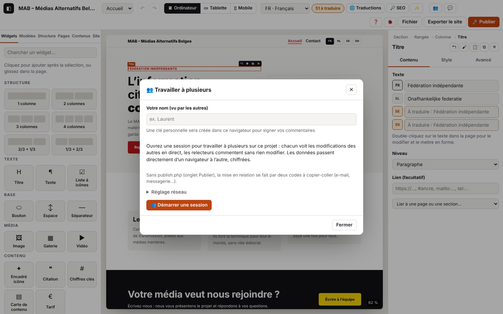

10. Travailler à plusieurs

Sur cette page
- 10.1 Héberger une session
- 10.2 Inviter quelqu'un (lien d'invitation)
- 10.3 Rejoindre une session par lien
- 10.4 Rejoindre par codes (sans serveur)
- 10.5 Voir où travaillent les autres (présence)
- 10.6 Modifier ensemble
- 10.7 Hors ligne puis retour
- 10.8 Quitter ou fermer la session
- 10.9 Invitations refusées (abîmée, expirée, falsifiée)
- 10.10 Régler le réseau (serveur STUN)
- 10.11 Diagnostiquer une connexion qui ne s'établit pas
- 10.12 Sécurité : parties privées, textes nettoyés, projet refusé
- 10.13 Les photos en collaboration
- Codes de ce chapitre
À plusieurs, chacun dans son navigateur, sur le même projet et en direct : la personne qui ouvre la session (l'hôte) envoie un lien d'invitation, les autres le rejoignent comme éditeur (peut tout modifier) ou relecteur (commente seulement, voir le chapitre 11). Les données passent directement d'un navigateur à l'autre (WebRTC, chiffré) ; publish.php sert seulement de boîte aux lettres pour la mise en relation, avec des messages chiffrés effacés après 15 minutes. Sans publish.php, la mise en relation se fait par deux codes à copier-coller.
Domaines du journal
collab.*: la session (héberger, inviter, rejoindre, quitter, reprendre), les identités vérifiées, la synchronisation du projet, la présence, les refus.rtc.*: la connexion directe WebRTC entre deux navigateurs (adresses réseau échangées, états ICE, canal de données). Jamais d'adresse IP : seulement le type des adresses (host,srflx,relay).signal.*: la mise en relation (boîte aux lettres de publish.php, codes manuels, réglage STUN).php.signal.*: ce que publish.php a fait de ces messages, côté serveur (voir le chapitre 8).- Liés :
store.remote(modifications reçues appliquées),versions.*/version.*(version de sécurité avant de rejoindre),storage.secret-*(clé personnelle et état de session gardés sur l'appareil).
Ce qui n'est jamais écrit dans le journal : la clé de la session (le morceau #join=… du lien est masqué), les liens d'invitation complets, les codes de connexion (seulement leur longueur chars), les adresses IP, le contenu des messages. Les identifiants de salle (room) sont abrégés à 8 caractères ; fp est l'empreinte publique d'une personne (16 caractères), pas un secret.
Le contexte « collaboration » : le journal copié (Journal (icône insecte) → « Copier le journal ») commence par une ligne collaboration : {…} qui donne ton rôle, l'état de la session, la mise en relation (boîte aux lettres ou codes), le serveur STUN, le nombre de participants vérifiés et, pour chaque lien WebRTC, ses états (ice, connexion, collecte, canal), les types d'adresses locales et distantes et le chemin réseau utilisé (paire). C'est la première chose à regarder quand une connexion ne s'établit pas.
10.1 Héberger une session
But : ouvrir une session sur ton projet pour que d'autres puissent le rejoindre.
Étapes
- (Conseillé) Onglet Publier → OVH : indique l'adresse de ton publish.php (version 4). Sans elle, la mise en relation se fera par codes (10.4).
- Clique sur Travailler à plusieurs (icône deux personnes) (barre du haut).
- Indique ton nom (vu par les autres) : une clé personnelle est créée dans ce navigateur, pour prouver ton identité et signer tes commentaires.
- Clique Travailler à plusieurs (icône deux personnes) Démarrer une session.
Ce que tu vois : « Session ouverte : envoyez un lien d’invitation. », deux liens (éditeur et relecteur), la zone « Connexion par codes » et la liste « Participants (0) ». Le bouton Travailler à plusieurs (icône deux personnes) devient actif.
Journal attendu (journaux/collab-heberger.log)
Détails techniques : journal attendu
05:08:26.254 +1.02s INFO collab.open Fenêtre « Travailler à plusieurs » {"state":"aucune session","peers":0,"identity":false,"publish":"oui"}
…
05:08:26.285 +1.05s INFO collab.identity.new Clé personnelle créée pour Kudoro {"fp":"IY4BOSk6K6wwsZ8i","did":"did:key:zDnaeypUHJMzxeWa"}
…
05:08:26.343 +1.11s INFO collab.host.start [collab.host#1] Ouverture d’une session de collaboration {"name":"Kudoro","fp":"IY4BOSk6K6wwsZ8i","resume":false}
…
05:08:26.355 +1.12s DEBUG signal.check Boîte aux lettres disponible (publish.php version 4) {"url":"http://127.0.0.1:8864/publish.php","version":"4","req":"c43a38c1"}
05:08:26.355 +1.12s INFO collab.host.signal [collab.host#1 · 12 ms] Mise en relation par la boîte aux lettres de publish.php {"via":"boîte aux lettres","url":"http://127.0.0.1:8864/publish.php"}
05:08:26.356 +1.12s INFO signal.host En attente des invités dans la boîte aux lettres de publish.php {"room":"b0d6c15c","peer":"caf096d817f96803","url":"http://127.0.0.1:8864/publish.php"}
05:08:26.356 +1.12s DEBUG signal.start Relève de la boîte aux lettres toutes les 2 s {"room":"b0d6c15c","peer":"caf096d817f96803","every":2000}
05:08:26.358 +1.12s DEBUG collab.invite.create Liens d’invitation créés (éditeur et relecteur, valables 7 jours) {"roles":["editor","reviewer"],"days":7,"via":"boîte aux lettres","chars":661}
05:08:26.358 +1.12s INFO collab.host.ok [collab.host#1 · 15 ms] Session ouverte : envoie un lien d’invitation {"room":"b0d6c15c","peer":"caf096d817f96803","docId":"doc_a20a22aa6f5e49c0","via":"boîte aux lettres","stun":"aucun"}À vérifier : collab.host.start → signal.check (publish.php répond, avec sa version) → collab.host.signal « par la boîte aux lettres » → signal.host → collab.host.ok. via dit comment les invités te trouveront ; stun le serveur STUN utilisé (« aucun » dans les tests, qui restent sur la même machine).
Variantes
| Situation | Ce qui change à l'écran | Journal |
|---|---|---|
| Pas d'adresse publish.php dans Publier | la zone « Connexion par codes » est ouverte | collab.host.signal « Pas d’adresse publish.php (onglet Publier) : mise en relation par codes », collab.host.ok {"via":"codes"} |
publish.php ancien, sans boîte aux lettres (sa réponse ne contient pas "signal":true) | idem : codes | signal.unsupported (WARN) {"why":"trop ancien","version":"2"} puis collab.host.signal « publish.php ne sert pas de boîte aux lettres » (extrait : journaux/collab-heberger-codes.log) |
| publish.php injoignable (adresse fausse, hébergement en panne, hors ligne) | idem : codes | net.fail (ERROR) puis signal.unsupported (WARN) {"why":"injoignable"} |
| L'adresse répond, mais pas en JSON (page d'erreur, PHP non exécuté) | idem : codes | signal.unsupported (WARN) {"why":"pas du JSON","status":…} |
| Clé personnelle déjà créée dans ce navigateur | pas de nouvelle clé | collab.identity.load (DEBUG) au lieu de collab.identity.new ; collab.identity.rename (INFO) si tu changes de nom |
| Tu cliques encore sur « Démarrer » alors qu'une session est ouverte | rien ne change | collab.host.already (DEBUG) |
| La page a été rechargée pendant une session | « Votre session a été interrompue… » et « Reprendre la session » | au démarrage : collab.restore (INFO) ; au clic : collab.resume.start … collab.resume.ok « Session reprise : les invités peuvent se reconnecter avec les mêmes liens » |
Erreurs
| Situation | Message affiché | Journal | Que faire |
|---|---|---|---|
| Nom pas encore indiqué | « Indiquez d’abord votre nom. » | collab.no-identity (WARN) | écris ton nom, puis « Démarrer » |
| Clé personnelle enregistrée illisible | (aucun) une nouvelle clé est créée | collab.identity.invalid (WARN) | rien : tes anciens commentaires restent signés par l'ancienne clé |
| Stockage de l'appareil indisponible (navigation privée stricte) | (aucun) | collab.identity.unreadable, collab.identity.unsaved, collab.save-fail (WARN) | la session marche, mais ne survivra pas à un rechargement |
| Erreur inattendue à l'ouverture | message de l'erreur | collab.host.fail (ERROR) avec l'erreur | envoie-nous le journal |
10.2 Inviter quelqu'un (lien d'invitation)
But : donner à une personne le moyen de rejoindre ta session, avec le bon rôle.
Étapes : dans la fenêtre « Travailler à plusieurs », à côté de « ✎ Invitation éditeur » ou « 💬 Invitation relecteur », clique Copier, puis envoie le lien (e-mail, messagerie).
Ce que tu vois : « Lien copié. ».
Journal attendu (journaux/collab-inviter.log)
Détails techniques : journal attendu
05:08:26.420 +1.18s INFO collab.invite.copy Lien d’invitation copié {"what":"data-copy-editor"}Les liens eux-mêmes ne sont jamais écrits ; collab.invite.create (à l'ouverture de la session, 10.1) dit qu'ils existent, pour quels rôles et pour combien de jours.
Variantes
| Situation | Ce qui change | Journal |
|---|---|---|
| Le navigateur refuse le presse-papiers | « Lien sélectionné : copiez-le (Ctrl+C). » | collab.invite.copy-fail (WARN) |
À savoir : un lien est valable 7 jours et contient la clé de la session. Il désigne ton navigateur comme hôte : si tu fermes la session (10.8) puis en ouvres une nouvelle, il faut envoyer de nouveaux liens.
10.3 Rejoindre une session par lien
But : ouvrir le lien reçu et travailler sur le projet de l'hôte.
Étapes
- Ouvre le lien dans ton navigateur (Chrome, Edge, Firefox récents).
- La fenêtre « Travailler à plusieurs (icône deux personnes) Rejoindre une session » dit qui t'invite et pour quoi. Indique ton nom.
- Clique Rejoindre.
Ce que tu vois : « Connexion directe en cours… », puis « Projet reçu de Kudoro. » : le projet de l'hôte remplace le tien (qui est d'abord enregistré dans les versions). La pastille de l'hôte apparaît en haut.
Journal attendu chez l'invité (journaux/collab-rejoindre-lien-invite.log)
Détails techniques : journal attendu
05:08:27.140 +0.07s INFO collab.join.link Lien d’invitation ouvert
…
05:08:27.404 +0.33s INFO collab.invite.open Invitation de Kudoro : éditeur {"role":"editor","owner":"Kudoro","ownerFp":"IY4BOSk6K6wwsZ8i","via":"boîte aux lettres","signal":"http://127.0.0.1:8864/publish.php","hours":168}
…
05:08:27.595 +0.52s INFO collab.identity.new Clé personnelle créée pour Ana {"fp":"Auvgw65qxQJFT3tl","did":"did:key:zDnaesex9gYkMWiC"}
05:08:27.599 +0.53s INFO collab.join.start [collab.join#1] Rejoindre une session {"name":"Ana","fp":"Auvgw65qxQJFT3tl","via":"boîte aux lettres"}
05:08:27.600 +0.53s DEBUG collab.join.invite [collab.join#1 · 1 ms] Invitation valable : Kudoro invite comme éditeur {"role":"editor","owner":"Kudoro","host":"caf096d817f96803","signal":"http://127.0.0.1:8864/publish.php","hours":168}
…
05:08:27.607 +0.53s DEBUG collab.join.backup [collab.join#1 · 8 ms] Projet actuel enregistré dans les versions avant de recevoir celui de l’hôte
05:08:27.608 +0.54s INFO rtc.join.start [rtc.join#1] Connexion à l’hôte caf096d817f96803 par la boîte aux lettres {"host":"caf096d817f96803","url":"http://127.0.0.1:8864/publish.php","room":"b0d6c15c"}
05:08:27.612 +0.54s DEBUG rtc.pc.create Connexion WebRTC créée (côté demande) {"side":"offer","label":"caf096d817f96803","stun":"aucun (réseau local seulement)"}
05:08:27.620 +0.55s DEBUG rtc.join.offer [rtc.join#1 · 12 ms] Demande de connexion créée : collecte des adresses réseau
…
05:08:31.620 +4.55s DEBUG rtc.ice.gather-timeout Collecte des adresses non terminée après 4 s : envoi des 1 adresse(s) trouvée(s) {"label":"caf096d817f96803","ms":4001,"local":{"host":1,"srflx":0,"relay":0,"prflx":0},"stun":"aucun"}
05:08:31.621 +4.55s INFO rtc.ice.no-stun Aucun serveur STUN : seules les adresses locales sont proposées (même réseau seulement) {"label":"caf096d817f96803"}
05:08:31.622 +4.55s DEBUG signal.post Dépôt d’un message chiffré « offer » pour caf096d817f96803 {"room":"b0d6c15c","from":"5ce63b23a9932966","to":"caf096d817f96803","t":"offer","bytes":922}
…
05:08:31.636 +4.56s INFO rtc.join.sent [rtc.join#1 · 4028 ms] Demande déposée dans la boîte aux lettres : en attente de la réponse de l’hôte {"local":{"host":1,"srflx":0,"relay":0,"prflx":0}}
05:08:31.636 +4.56s DEBUG signal.start Relève de la boîte aux lettres toutes les 1 s {"room":"b0d6c15c","peer":"5ce63b23a9932966","every":1000}
05:08:32.399 +5.33s DEBUG rtc.pc.state Connexion : établissement (ICE puis chiffrement DTLS) {"label":"caf096d817f96803","state":"connecting","ms":4787}
05:08:32.400 +5.33s DEBUG rtc.ice.state ICE : essai des chemins réseau entre les deux navigateurs {"label":"caf096d817f96803","state":"checking","ms":4788}
05:08:32.650 +5.58s DEBUG signal.receive 1 message(s) relevé(s) dans la boîte aux lettres {"room":"b0d6c15c","count":1,"from":["caf096d817f96803"]}
05:08:32.652 +5.58s DEBUG signal.stop Relève de la boîte aux lettres arrêtée {"room":"b0d6c15c","polls":2,"received":1}
05:08:32.654 +5.58s DEBUG rtc.ice.remote Adresses reçues de l’autre navigateur : 1 host {"label":"caf096d817f96803","type":"answer","remote":{"host":1,"srflx":0,"relay":0,"prflx":0}}
05:08:32.655 +5.58s INFO rtc.join.answer [rtc.join#1 · 5047 ms] Réponse de l’hôte reçue : ouverture du canal… {"remote":{"host":1,"srflx":0,"relay":0,"prflx":0}}
…
05:08:32.662 +5.59s INFO rtc.pair Chemin réseau utilisé : host ↔ host (udp) {"label":"caf096d817f96803","local":"host","remote":"host","protocol":"udp","rttMs":1,"ms":5049}
05:08:32.663 +5.59s INFO rtc.channel.open Canal de données ouvert avec caf096d817f96803 {"label":"caf096d817f96803","ms":5050}
05:08:32.663 +5.59s INFO rtc.join.ok [rtc.join#1 · 5055 ms] Liaison directe prête avec l’hôte {"ms":5051}
05:08:32.663 +5.59s DEBUG collab.link.new Nouveau lien : présentation (invité) {"label":"caf096d817f96803","links":1}
05:08:32.666 +5.59s INFO collab.join.ok [collab.join#1 · 5067 ms] Connecté·e à l’hôte : vérification des identités puis réception du projet {"role":"editor","room":"b0d6c15c"}
05:08:32.679 +5.61s DEBUG collab.hello Présentation de l’hôte Kudoro : c’est bien la personne qui a signé l’invitation {"name":"Kudoro","fp":"IY4BOSk6K6wwsZ8i","role":"owner"}
05:08:32.681 +5.61s INFO collab.auth Identité vérifiée : Kudoro (hôte) {"name":"Kudoro","fp":"IY4BOSk6K6wwsZ8i","role":"owner","peers":1}
05:08:32.683 +5.61s DEBUG collab.sync.ask Demande du projet à l’hôte {"docId":null,"known":0}
…
05:08:32.687 +5.61s INFO collab.snapshot Projet reçu de Kudoro {"docId":"doc_a20a22aa6f5e49c0","pages":2,"comments":0}Journal attendu chez l'hôte (journaux/collab-rejoindre-lien-hote.log)
Détails techniques : journal attendu
05:08:32.389 +7.15s DEBUG signal.receive 1 message(s) relevé(s) dans la boîte aux lettres {"room":"b0d6c15c","count":1,"from":["5ce63b23a9932966"]}
05:08:32.390 +7.15s INFO rtc.accept.start [rtc.accept#1] Demande de connexion reçue de 5ce63b23a9932966 {"from":"5ce63b23a9932966","via":"boîte aux lettres"}
05:08:32.393 +7.16s DEBUG rtc.pc.create Connexion WebRTC créée (côté réponse) {"side":"answer","label":"5ce63b23a9932966","stun":"aucun (réseau local seulement)"}
05:08:32.395 +7.16s DEBUG rtc.ice.remote Adresses reçues de l’autre navigateur : 1 host {"label":"5ce63b23a9932966","type":"offer","remote":{"host":1,"srflx":0,"relay":0,"prflx":0}}
05:08:32.397 +7.16s DEBUG rtc.accept.answer [rtc.accept#1 · 7 ms] Réponse créée : collecte des adresses réseau
05:08:32.397 +7.16s DEBUG rtc.ice.gathering Collecte des candidats : gathering {"label":"5ce63b23a9932966","state":"gathering","local":{"host":0,"srflx":0,"relay":0,"prflx":0}}
…
05:08:32.399 +7.16s DEBUG rtc.pc.state Connexion : établissement (ICE puis chiffrement DTLS) {"label":"5ce63b23a9932966","state":"connecting","ms":7}
…
05:08:32.403 +7.17s DEBUG rtc.ice.gathered Candidats trouvés : 1 host, 0 srflx, 0 relay {"label":"5ce63b23a9932966","ms":6,"local":{"host":1,"srflx":0,"relay":0,"prflx":0},"stun":"aucun"}
…
05:08:32.404 +7.17s DEBUG signal.post Dépôt d’un message chiffré « answer » pour 5ce63b23a9932966 {"room":"b0d6c15c","from":"caf096d817f96803","to":"5ce63b23a9932966","t":"answer","bytes":922}
…
05:08:32.412 +7.17s DEBUG php.signal.post Message chiffré déposé {"room":"b0d6c15c","from":"caf096d817f96803","to":"5ce63b23a9932966","bytes":922,"id":2,"new_room":false,"req":"dc4fb13f","srvMs":0.4}
…
05:08:32.412 +7.17s INFO rtc.accept.sent [rtc.accept#1 · 22 ms] Réponse déposée dans la boîte aux lettres : ouverture du canal… {"local":{"host":1,"srflx":0,"relay":0,"prflx":0}}
…
05:08:32.661 +7.42s INFO rtc.pair Chemin réseau utilisé : host ↔ host (udp) {"label":"5ce63b23a9932966","local":"host","remote":"host","protocol":"udp","rttMs":1,"ms":269}
05:08:32.665 +7.43s INFO rtc.channel.open Canal de données ouvert avec 5ce63b23a9932966 {"label":"5ce63b23a9932966","ms":272}
05:08:32.667 +7.43s INFO rtc.accept.ok [rtc.accept#1 · 277 ms] Liaison directe prête avec 5ce63b23a9932966 {"ms":274}
05:08:32.668 +7.43s DEBUG collab.link.new Nouveau lien : présentation (hôte) {"label":"5ce63b23a9932966","links":1}
05:08:32.672 +7.43s DEBUG collab.hello Présentation de Ana : invitation valable (éditeur, expire dans 168 h) {"name":"Ana","fp":"Auvgw65qxQJFT3tl","role":"editor"}
05:08:32.681 +7.44s INFO collab.auth Identité vérifiée : Ana (éditeur) {"name":"Ana","fp":"Auvgw65qxQJFT3tl","role":"editor","peers":1}
05:08:32.684 +7.45s INFO collab.sync.snapshot Envoi du projet complet à Ana {"name":"Ana","why":"nouveau participant","pages":2,"kb":12}
05:08:32.685 +7.45s DEBUG collab.presence Présence de Ana {"fp":"Auvgw65qxQJFT3tl","page":"p_l3wjjz84","selected":null}À vérifier, dans l'ordre :
- Mise en relation (
signal.*) : l'invité dépose sa demande (signal.post« offer »,rtc.join.sent) ; l'hôte la relève (signal.receive), répond (rtc.accept.sent) ; l'invité relève la réponse (rtc.join.answer). - Connexion directe (
rtc.*) :rtc.ice.state« checking » puis « connected »,rtc.pc.state« établie et chiffrée »,rtc.pair(le chemin réseau choisi),rtc.channel.open, puisrtc.join.ok/rtc.accept.ok. - Identités (
collab.*) :collab.hello(l'hôte vérifie l'invitation, l'invité vérifie que l'hôte est bien celui qui l'a signée),collab.authdes deux côtés. - Projet :
collab.sync.ask→collab.sync.snapshot(hôte) →collab.snapshot(invité).
Les durées ms des étapes rtc.join.* montrent où le temps passe : la collecte des adresses (jusqu'à 4 s), l'attente de la réponse (relève toutes les 1 à 2 s), l'ouverture du canal (quelques centaines de ms).
Variantes
| Situation | Ce qui change à l'écran | Journal |
|---|---|---|
| Invitation relecteur | « … vous invite à relire et commenter » ; mode relecture | collab.readonly (INFO), voir le chapitre 11 |
| Tu avais déjà rejoint cette session sur cet appareil | pas de version de sécurité, le projet n'est pas recopié | collab.join.resume (INFO) au lieu de collab.join.backup, puis collab.sync.ask « Demande des modifications manquées (reprise) » |
| Avec un serveur STUN (réglage par défaut) et deux réseaux différents | — | rtc.ice.gathered avec srflx ≥ 1 ; rtc.pair srflx ↔ srflx (ou host ↔ srflx) |
| Un ancien message traîne dans la boîte aux lettres | — | signal.ignored (DEBUG) « pas la réponse attendue » : sans conséquence |
| Lien coupé ou abîmé (copie incomplète) | rien ne s'ouvre | collab.join.bad-link (WARN) |
Erreurs : voir 10.9 (invitations refusées) et 10.11 (connexion qui ne s'établit pas).
| Situation | Message affiché | Journal | Que faire |
|---|---|---|---|
| Nom vide | « Indiquez votre nom. » | collab.join.no-name (WARN) | écris ton nom |
| L'hôte ne répond pas (session fermée, onglet de l'hôte fermé ou en veille) | « Échec de la connexion : pas de réponse : la session est-elle toujours ouverte de l’autre côté ? » (après 30 s) | signal.no-answer (WARN) puis rtc.join.fail, collab.join.fail (ERROR) | demande à l'hôte de garder l'onglet ouvert, ou un nouveau lien |
| Boîte aux lettres injoignable | « Échec de la connexion : boîte aux lettres injoignable (Failed to fetch) » | signal.post-fail (WARN), rtc.join.fail (ERROR) — voir 10.11 |
10.4 Rejoindre par codes (sans serveur)
But : se connecter quand il n'y a pas de publish.php (ou qu'il est trop ancien) : les deux navigateurs échangent deux codes par un autre moyen (e-mail, messagerie).
Étapes
- L'invité ouvre le lien, indique son nom, clique Rejoindre : un code de connexion apparaît (« 1. Envoyez ce code à … »). Il l'envoie à l'hôte.
- L'hôte le colle dans Travailler à plusieurs (icône deux personnes) → « Connexion par codes » → Créer le code de réponse, et renvoie le code de réponse à l'invité.
- L'invité colle le code de réponse (« 2. Collez ici… ») → Se connecter.
Ce que tu vois : chez l'invité, « Connecté·e : réception du projet… » puis le projet de l'hôte.
Journal attendu chez l'invité (journaux/collab-codes-invite.log)
Détails techniques : journal attendu
05:09:07.869 +0.30s INFO collab.invite.open Invitation de Hôte manuel : relecteur {"role":"reviewer","owner":"Hôte manuel","ownerFp":"k6QfSYzzwQjiOdj2","via":"codes","hours":168}
…
05:09:07.973 +0.40s INFO collab.join.start [collab.join#1] Rejoindre une session {"name":"Relecteur manuel","fp":"3JKupVQgZWXUILKU","via":"codes"}
05:09:07.974 +0.40s DEBUG collab.join.invite [collab.join#1 · 1 ms] Invitation valable : Hôte manuel invite comme relecteur {"role":"reviewer","owner":"Hôte manuel","host":"fc0a98bbb7bd44e5","signal":"aucune (codes)","hours":168}
…
05:09:07.982 +0.41s INFO collab.join.ok [collab.join#1 · 9 ms] Session prête : échange de codes à faire {"role":"reviewer","room":"91f52fc6"}
05:09:07.982 +0.41s INFO rtc.manual-offer.start [rtc.manual-offer#1] Création du code de connexion (sans serveur) {"peer":"3c70f862c9c47449"}
05:09:07.987 +0.42s DEBUG rtc.pc.create Connexion WebRTC créée (côté demande) {"side":"offer","label":"manuel","stun":"aucun (réseau local seulement)"}
…
05:09:12.003 +4.43s DEBUG rtc.ice.gather-timeout Collecte des adresses non terminée après 4 s : envoi des 1 adresse(s) trouvée(s) {"label":"manuel","ms":4000,"local":{"host":1,"srflx":0,"relay":0,"prflx":0},"stun":"aucun"}
…
05:09:12.012 +4.44s INFO rtc.manual-offer.ok [rtc.manual-offer#1 · 4030 ms] Code de connexion prêt : à envoyer à l’hôte {"chars":932,"local":{"host":1,"srflx":0,"relay":0,"prflx":0}}
…
05:09:12.489 +4.92s INFO rtc.manual-finish.start [rtc.manual-finish#1] Connexion avec le code de réponse reçu {"chars":932}
…
05:09:12.556 +4.99s INFO rtc.manual-finish.start [rtc.manual-finish#2] Connexion avec le code de réponse reçu {"chars":896}
05:09:12.569 +5.00s DEBUG rtc.ice.remote Adresses reçues de l’autre navigateur : 1 host {"label":"manuel","type":"answer","remote":{"host":1,"srflx":0,"relay":0,"prflx":0}}
05:09:12.570 +5.00s INFO rtc.manual-finish.remote [rtc.manual-finish#2 · 14 ms] Code de réponse accepté : ouverture du canal… {"remote":{"host":1,"srflx":0,"relay":0,"prflx":0}}
…
05:09:12.571 +5.00s INFO rtc.channel.open Canal de données ouvert avec manuel {"label":"manuel","ms":4584}
05:09:12.571 +5.00s INFO rtc.manual-finish.ok [rtc.manual-finish#2 · 15 ms] Liaison directe prête avec l’hôte {"ms":4584}
…
05:09:12.575 +5.00s DEBUG collab.hello Présentation de l’hôte Hôte manuel : c’est bien la personne qui a signé l’invitation {"name":"Hôte manuel","fp":"k6QfSYzzwQjiOdj2","role":"owner"}
…
05:09:12.579 +5.01s INFO collab.auth Identité vérifiée : Hôte manuel (hôte) {"name":"Hôte manuel","fp":"k6QfSYzzwQjiOdj2","role":"owner","peers":1}
05:09:12.581 +5.01s DEBUG collab.sync.ask Demande du projet à l’hôte {"docId":null,"known":0}
…
05:09:12.591 +5.02s INFO collab.snapshot Projet reçu de Hôte manuel {"docId":"doc_fbff36c9667737fa","pages":2,"comments":0}(La première tentative rtc.manual-finish#1 de cet extrait est l'erreur « mauvais code » du tableau ci-dessous.)
Journal attendu chez l'hôte (journaux/collab-codes-hote.log)
Détails techniques : journal attendu
05:09:12.394 +5.82s INFO rtc.manual-answer.start [rtc.manual-answer#2] Code de connexion reçu : création du code de réponse {"chars":932}
05:09:12.399 +5.82s DEBUG rtc.pc.create Connexion WebRTC créée (côté réponse) {"side":"answer","label":"3c70f862c9c47449","stun":"aucun (réseau local seulement)"}
05:09:12.400 +5.83s INFO rtc.accept.start [rtc.accept#1] Demande de connexion par code de 3c70f862c9c47449 {"from":"3c70f862c9c47449","via":"codes"}
05:09:12.407 +5.83s DEBUG rtc.ice.remote Adresses reçues de l’autre navigateur : 1 host {"label":"3c70f862c9c47449","type":"offer","remote":{"host":1,"srflx":0,"relay":0,"prflx":0}}
…
05:09:12.427 +5.85s DEBUG rtc.ice.state ICE : essai des chemins réseau entre les deux navigateurs {"label":"3c70f862c9c47449","state":"checking","ms":29}
05:09:12.428 +5.85s DEBUG rtc.pc.state Connexion : établissement (ICE puis chiffrement DTLS) {"label":"3c70f862c9c47449","state":"connecting","ms":29}
05:09:12.429 +5.85s INFO rtc.ice.state ICE : un chemin réseau fonctionne {"label":"3c70f862c9c47449","state":"connected","ms":30}
…
05:09:12.430 +5.86s DEBUG rtc.ice.gathered Candidats trouvés : 1 host, 0 srflx, 0 relay {"label":"3c70f862c9c47449","ms":19,"local":{"host":1,"srflx":0,"relay":0,"prflx":0},"stun":"aucun"}
…
05:09:12.431 +5.86s INFO rtc.manual-answer.ok [rtc.manual-answer#2 · 37 ms] Code de réponse prêt : à renvoyer à l’invité {"chars":896,"local":{"host":1,"srflx":0,"relay":0,"prflx":0}}
05:09:12.565 +5.99s INFO rtc.pc.state Connexion : établie et chiffrée {"label":"3c70f862c9c47449","state":"connected","ms":166}
05:09:12.566 +5.99s INFO rtc.pair Chemin réseau utilisé : host ↔ host (udp) {"label":"3c70f862c9c47449","local":"host","remote":"host","protocol":"udp","rttMs":1,"ms":167}
05:09:12.567 +5.99s INFO rtc.channel.open Canal de données ouvert avec 3c70f862c9c47449 {"label":"3c70f862c9c47449","ms":169}
05:09:12.568 +5.99s INFO rtc.accept.ok [rtc.accept#1 · 168 ms] Liaison directe prête avec 3c70f862c9c47449 {"ms":169}À vérifier : rtc.manual-offer.ok (code prêt, chars ≈ 900), rtc.manual-answer.ok (réponse prête), puis rtc.manual-finish.ok et rtc.accept.ok. Ensuite, tout se passe comme en 10.3 (collab.auth, collab.snapshot). Le flux collab.join se termine tout de suite (« Session prête : échange de codes à faire ») : la connexion elle-même est suivie par rtc.manual-*.
Erreurs
| Situation | Message affiché | Journal | Que faire |
|---|---|---|---|
| Code incomplet (copie coupée) ou modifié | hôte : « Code non reconnu : code illisible : incomplet, modifié ou créé pour une autre session » | signal.code-invalid (WARN) {"chars":80} puis rtc.manual-answer.fail (ERROR) (journaux/collab-codes-incomplet.log) | recopie le code en entier (un code fait environ 900 caractères) |
| Code d'une autre session | idem | idem | utilise le code de cette invitation |
| L'invité colle son propre code au lieu de la réponse | « Échec : Ce code n’est pas une réponse de cette session. » | signal.code-wrong (WARN) {"got":"offer","expected":"answer"} puis rtc.manual-finish.fail (journaux/collab-codes-mauvais.log) | colle le code reçu de l'hôte |
| L'hôte colle un code de réponse au lieu d'une demande | « Code non reconnu : Ce code n’est pas une demande de connexion de cette session. » | signal.code-wrong (WARN), rtc.manual-answer.fail | colle le code reçu de l'invité |
| Les codes sont bons mais la connexion ne s'ouvre pas | « Échec : la connexion directe n’a pas abouti… » (20 s) | rtc.channel.timeout (WARN) avec la cause, rtc.manual-finish.fail ; chez l'hôte rtc.accept.fail après 3 minutes | voir 10.11 : les codes remplacent la boîte aux lettres, pas la traversée des box internet |
rtc.manual-cancel (INFO) note une connexion par codes abandonnée par le programme.
10.5 Voir où travaillent les autres (présence)
But : savoir qui est là et sur quel élément il travaille.
Étapes : rien à faire. Les pastilles des participants sont en haut ; clique sur une pastille pour aller là où la personne travaille.
Ce que tu vois : un cadre à la couleur de la personne, avec son nom, autour de l'élément qu'elle a sélectionné ; dans l'inspecteur, « ✎ Ana travaille aussi sur … ».
Journal attendu (chez l'hôte, quand Ana sélectionne un titre ; journaux/collab-presence.log)
Détails techniques : journal attendu
05:08:33.752 +8.52s DEBUG collab.presence Présence de Ana {"fp":"Auvgw65qxQJFT3tl","page":"p_hlwzd6p4","selected":"n_5b6g691i2o"}page et selected disent où est la personne. Une ligne collab.presence par changement de sélection ou de page (DEBUG).
10.6 Modifier ensemble
But : que chaque modification arrive chez les autres, sans écraser la leur.
Étapes : modifie comme d'habitude. Annuler (Ctrl+Z) ne retire que tes modifications.
Ce que tu vois : la page des autres se met à jour en moins d'une seconde.
Journal attendu chez celui qui modifie (journaux/collab-modification-hote.log)
Détails techniques : journal attendu
05:08:33.929 +8.69s DEBUG store.commit Modification {"key":"n_5b6g691i2o:text:fr","source":"inspector","past":3,"page":"p_hlwzd6p4"}
05:08:33.935 +8.70s DEBUG collab.ops.out 1 modification(s) envoyée(s) à 1 participant(s) {"n":1,"to":1}… et chez les autres (journaux/collab-modification-invite.log)
Détails techniques : journal attendu
05:08:33.937 +6.86s DEBUG collab.ops.in 1 modification(s) de Kudoro appliquée(s) {"name":"Kudoro","received":1,"applied":1}
05:08:33.939 +6.87s DEBUG store.remote Modifications d’un autre participant appliquées {"ops":1,"history":0}
05:08:33.945 +6.87s DEBUG canvas.render Canevas mis à jour sans rechargement (en-tête, contenu, pied, styles) {"source":"remote","mode":"contenu","ms":4}n = nombre d'opérations, to = participants vérifiés qui les reçoivent. Chez l'hôte, les modifications d'un invité sont relayées aux autres (collab.ops.relay, TRACE).
Variantes
| Situation | Journal |
|---|---|
| Deux personnes modifient le même champ en même temps | la plus récente gagne partout : collab.ops.in « … (1 déjà connue(s) ou plus ancienne(s)) » chez celle dont la modification a perdu |
| Le champ que tu édites change chez un autre | inspector.remote-deferred : l'inspecteur se redessine quand tu quittes le champ |
| Des modifications arrivent avant le projet (reprise en cours) | collab.ops.early (DEBUG) : ignorées, elles reviennent avec la reprise |
Erreurs
| Situation | Message affiché | Journal | Que faire |
|---|---|---|---|
| Un relecteur (ou un programme) envoie une modification | hôte : « Modification refusée (Laurent, relecteur) : … » | collab.ops.rejected (WARN) chez l'hôte, collab.remote-error chez l'expéditeur — voir le chapitre 11 | normal pour un relecteur |
| Message abîmé ou d'une autre version d'Atelier | (aucun) | rtc.recv.invalid, collab.message-invalid (WARN), collab.message-unknown (DEBUG) | mettez Atelier à jour des deux côtés |
| Erreur en appliquant un message (bogue) | « Collaboration : … » | collab.message-fail (ERROR) avec la pile | envoie-nous le journal des deux côtés |
10.7 Hors ligne puis retour
But : continuer à travailler quand la connexion est coupée (onglet fermé, ordinateur en veille, réseau perdu), puis tout fusionner.
Étapes
- Continue à modifier : tes modifications sont gardées et suivies.
- Pour reprendre : rouvre le lien d'invitation (invité) ou Travailler à plusieurs (icône deux personnes) → Reprendre la session (hôte, après un rechargement).
Ce que tu vois : après la reconnexion, tes modifications arrivent chez les autres, et les leurs chez toi.
Journal attendu chez l'hôte quand l'invitée part (journaux/collab-depart-hote.log)
Détails techniques : journal attendu
05:08:50.343 +25.11s WARN rtc.ice.state ICE : chemin réseau perdu (coupure, veille, changement de réseau) ; WebRTC réessaie {"label":"5ce63b23a9932966","state":"disconnected","ms":17950}
05:08:50.344 +25.11s WARN rtc.pc.state Connexion : interrompue, tentative de reprise {"label":"5ce63b23a9932966","state":"disconnected","ms":17951}
05:08:50.344 +25.11s INFO rtc.channel.close Canal de données fermé avec 5ce63b23a9932966 {"label":"5ce63b23a9932966","pc":"disconnected","ice":"disconnected","sent":14,"received":7}
05:08:50.345 +25.11s INFO collab.link.closed Lien fermé avec Ana {"name":"Ana","fp":"Auvgw65qxQJFT3tl","role":"editor","authed":true,"left":1}
05:08:50.345 +25.11s INFO collab.peer.leave Ana a quitté la session {"fp":"Auvgw65qxQJFT3tl","role":"editor"}Chez l'invitée qui revient (journaux/collab-hors-ligne-retour.log)
Détails techniques : journal attendu
05:08:50.830 +0.13s DEBUG collab.identity.load Clé personnelle chargée : Ana {"fp":"Auvgw65qxQJFT3tl"}
05:08:50.832 +0.13s INFO collab.restore Session interrompue retrouvée (éditeur) : rouvre le lien d’invitation pour te reconnecter {"role":"editor","docId":"doc_a20a22aa6f5e49c0","host":"Kudoro","via":"boîte aux lettres"}
…
05:08:51.448 +0.74s DEBUG store.commit Modification {"key":"n_2h541z3c37:label:fr","source":"inspector","past":1,"page":"p_hlwzd6p4"}
05:08:51.456 +0.75s DEBUG collab.ops.out 1 modification(s) envoyée(s) à 0 participant(s) {"n":1,"to":0}
05:08:52.368 +1.67s INFO collab.join.link Lien d’invitation ouvert
…
05:08:52.437 +1.73s INFO collab.join.start [collab.join#1] Rejoindre une session {"name":"Ana","fp":"Auvgw65qxQJFT3tl","via":"boîte aux lettres"}
…
05:08:52.439 +1.74s INFO collab.join.rejoin [collab.join#1 · 2 ms] Même session qu’avant : reconnexion, les modifications faites entre-temps seront fusionnées {"docId":"doc_a20a22aa6f5e49c0"}
05:08:52.440 +1.74s INFO rtc.join.start [rtc.join#1] Connexion à l’hôte caf096d817f96803 par la boîte aux lettres {"host":"caf096d817f96803","url":"http://127.0.0.1:8864/publish.php","room":"b0d6c15c"}
…
05:08:56.471 +5.77s INFO rtc.join.sent [rtc.join#1 · 4031 ms] Demande déposée dans la boîte aux lettres : en attente de la réponse de l’hôte {"local":{"host":1,"srflx":0,"relay":0,"prflx":0}}
…
05:08:56.479 +5.78s DEBUG signal.ignored Message « answer » ignoré (pas la réponse attendue) {"from":"caf096d817f96803","t":"answer"}
…
05:08:57.490 +6.79s INFO rtc.join.answer [rtc.join#1 · 5050 ms] Réponse de l’hôte reçue : ouverture du canal… {"remote":{"host":1,"srflx":0,"relay":0,"prflx":0}}
…
05:08:57.499 +6.80s INFO rtc.join.ok [rtc.join#1 · 5059 ms] Liaison directe prête avec l’hôte {"ms":5053}
…
05:08:57.503 +6.80s INFO collab.join.ok [collab.join#1 · 5066 ms] Reconnecté·e : vérification des identités puis reprise {"role":"editor"}
…
05:08:57.516 +6.81s INFO collab.auth Identité vérifiée : Kudoro (hôte) {"name":"Kudoro","fp":"IY4BOSk6K6wwsZ8i","role":"owner","peers":1}
05:08:57.518 +6.82s DEBUG collab.sync.ask Demande des modifications manquées (reprise) {"docId":"doc_a20a22aa6f5e49c0","known":2}
05:08:57.542 +6.84s DEBUG collab.ops.in 4 modification(s) de Kudoro appliquée(s) {"name":"Kudoro","received":4,"applied":4,"review":4}
…
05:08:57.555 +6.85s INFO review.remote Commentaire reçu de Laurent {"id":"cm_e_pChwMPXbaY","fp":"7ylCE0KoKaMHlDzu","page":"p_hlwzd6p4","node":"n_21063j4e5p"}
05:08:57.556 +6.85s INFO collab.sync.merged Reprise : 4 modification(s) reçue(s), 1 envoyée(s) à l’hôte {"in":4,"out":1}Chez l'hôte (journaux/collab-hors-ligne-hote.log)
Détails techniques : journal attendu
05:08:56.559 +31.32s INFO rtc.accept.start [rtc.accept#3] Demande de connexion reçue de 5ce63b23a9932966 {"from":"5ce63b23a9932966","via":"boîte aux lettres"}
…
05:08:57.501 +32.26s INFO rtc.accept.ok [rtc.accept#3 · 942 ms] Liaison directe prête avec 5ce63b23a9932966 {"ms":940}
…
05:08:57.513 +32.28s INFO collab.auth Identité vérifiée : Ana (éditeur) {"name":"Ana","fp":"Auvgw65qxQJFT3tl","role":"editor","peers":2}
05:08:57.523 +32.29s INFO collab.sync.delta Reprise de Ana : 4 modification(s) manquée(s) envoyée(s) {"name":"Ana","ops":4}
05:08:57.563 +32.33s DEBUG collab.ops.in 1 modification(s) de Ana appliquée(s) {"name":"Ana","received":1,"applied":1}À vérifier : collab.restore au démarrage (la session est retrouvée), collab.ops.out « … à 0 participant(s) » pendant la coupure, collab.join.rejoin, puis collab.sync.delta (hôte : ce que l'invitée a manqué) et collab.sync.merged (invitée : reçu / envoyé).
Variantes
| Situation | Ce qui change | Journal |
|---|---|---|
| Coupure brève (Wi-Fi qui saute) | rien si le réseau revient vite | rtc.ice.state « disconnected » (WARN) puis « connected » (INFO) |
| L'onglet de l'invité est fermé | l'hôte voit la pastille disparaître après quelques secondes | rtc.ice.state « disconnected », rtc.channel.close, collab.link.closed, collab.peer.leave ; 20 à 30 s plus tard rtc.lost (INFO) |
| L'invité perd l'hôte | « Connexion avec l’hôte interrompue. Rouvrez le lien d’invitation… » | collab.host-lost (WARN) |
| Ton navigateur passe hors ligne | — | app.offline (WARN), puis app.online (INFO) |
| Reprise après rechargement, mais clé personnelle perdue | pas de reprise | collab.restore-no-identity (WARN) |
| État de session enregistré illisible | pas de reprise | collab.restore-unreadable ou collab.restore-fail (WARN) |
10.8 Quitter ou fermer la session
But : se déconnecter (invité) ou terminer la session pour tout le monde (hôte).
Étapes : Travailler à plusieurs (icône deux personnes) → Quitter la session (invité) ou Fermer la session (hôte).
Ce que tu vois : « Vous avez quitté la session. » / « Session fermée. » ; les pastilles disparaissent. Après une fermeture par l'hôte, ses anciens liens ne marchent plus.
Journal attendu (invitée qui quitte) (journaux/collab-quitter.log)
Détails techniques : journal attendu
05:08:58.356 +7.65s INFO storage.secret-write Secret gardé sur cet appareil (jamais dans le projet) {"name":"collab-session"}
…
05:08:58.552 +7.85s INFO collab.open Fenêtre « Travailler à plusieurs » {"state":"editor","peers":1,"identity":true,"publish":"oui"}
…
05:08:58.608 +7.91s INFO collab.leave Session quittée {"role":"editor","peers":1,"room":"b0d6c15c"}
05:08:58.608 +7.91s DEBUG collab.node.close Fermeture de 1 lien(s) {"links":1}
…
05:08:58.642 +7.94s INFO rtc.channel.close Canal de données fermé avec caf096d817f96803 {"label":"caf096d817f96803","pc":"closed","ice":"closed","sent":6,"received":6}Hôte qui ferme (journaux/collab-fermer.log)
Détails techniques : journal attendu
05:09:56.289 +91.05s INFO collab.leave Session fermée par l’hôte {"role":"owner","peers":1,"room":"b0d6c15c"}
05:09:56.290 +91.05s DEBUG signal.stop Relève de la boîte aux lettres arrêtée {"room":"b0d6c15c","polls":45,"received":4}
05:09:56.290 +91.05s DEBUG collab.node.close Fermeture de 1 lien(s) {"links":1}
…
05:09:56.317 +91.08s INFO rtc.channel.close Canal de données fermé avec f8f466bc22c8391f {"label":"f8f466bc22c8391f","pc":"closed","ice":"closed","sent":12,"received":10}signal.stop donne le nombre de relèves de la boîte aux lettres (polls) et de messages reçus pendant la session. Chez les invités : rtc.channel.close puis collab.host-lost.
10.9 Invitations refusées (abîmée, expirée, falsifiée)
But : comprendre pourquoi un lien est refusé. Chaque invitation est signée par la clé de l'hôte : on ne peut ni la modifier, ni en fabriquer une pour la session de quelqu'un d'autre.
Ce que tu vois : dans « Rejoindre une session », le message d'erreur à la place de l'explication, et le bouton Rejoindre désactivé.
Journal attendu (journaux/collab-invitation-invalide.log : un lien abîmé, puis un lien expiré)
Détails techniques : journal attendu
05:08:59.542 +0.38s INFO collab.join.link Lien d’invitation ouvert
…
05:08:59.545 +0.38s WARN collab.invite.invalid Invitation refusée : Signature de l’invitation invalide. {"reason":"Signature de l’invitation invalide."}
…
05:08:59.644 +0.48s WARN collab.invite.invalid Invitation refusée : Invitation expirée : demandez un nouveau lien. {"reason":"Invitation expirée : demandez un nouveau lien."}Lien falsifié (signé par une autre clé, avec la bonne clé de session) : il passe la vérification locale, mais l'hôte le refuse. Chez l'hôte (journaux/collab-invitation-falsifiee-hote.log) :
Détails techniques : journal attendu
05:09:04.860 +39.62s INFO rtc.accept.ok [rtc.accept#4 · 256 ms] Liaison directe prête avec 0ee363a37b8fc4bd {"ms":255}
…
05:09:04.866 +39.63s WARN collab.refused.owner Invitation de Faussaire refusée : signée par une autre clé que celle de l’hôte (lien falsifié ou d’une autre session) {"name":"Faussaire","fp":"8LokG_rg9pxAbkhj","signer":"HN1kxpRtekQIIImT","signerName":"Faussaire"}
…
05:09:04.877 +39.64s WARN collab.remote-error L’autre côté signale : Hôte inconnu : ce n’est pas la personne qui a envoyé l’invitation. {"from":"0ee363a37b8fc4bd","message":"Hôte inconnu : ce n’est pas la personne qui a envoyé l’invitation."}Chez l'invité (journaux/collab-invitation-falsifiee-invite.log) :
Détails techniques : journal attendu
05:08:59.695 +0.53s INFO collab.invite.open Invitation de Faussaire : éditeur {"role":"editor","owner":"Faussaire","ownerFp":"HN1kxpRtekQIIImT","via":"boîte aux lettres","signal":"http://127.0.0.1:8864/publish.php","hours":168}
…
05:09:04.862 +5.70s INFO rtc.join.ok [rtc.join#1 · 5076 ms] Liaison directe prête avec l’hôte {"ms":5070}
…
05:09:04.866 +5.71s INFO collab.join.ok [collab.join#1 · 5089 ms] Connecté·e à l’hôte : vérification des identités puis réception du projet {"role":"editor","room":"b0d6c15c"}
05:09:04.868 +5.71s WARN collab.refused.host Hôte inconnu : Kudoro n’est pas la personne qui a signé l’invitation (Faussaire) {"name":"Kudoro","fp":"IY4BOSk6K6wwsZ8i","expected":"HN1kxpRtekQIIImT"}
…
05:09:04.886 +5.72s WARN collab.remote-error L’autre côté signale : Invitation refusée : elle n’a pas été créée par cette session. {"from":"caf096d817f96803","message":"Invitation refusée : elle n’a pas été créée par cette session."}La connexion directe s'établit (rtc.join.ok) : c'est la vérification des identités (collab.refused.*) qui ferme le lien.
Erreurs
| Situation | Message affiché | Journal | Que faire |
|---|---|---|---|
| Lien abîmé (caractère changé ou coupé) | « Signature de l’invitation invalide. » ou « Invitation illisible. » | collab.invite.invalid (WARN) reason | recopie le lien en entier |
| Lien de plus de 7 jours | « Invitation expirée : demandez un nouveau lien. » | collab.invite.invalid (WARN) | demande un nouveau lien |
| Lien d'une autre session (clé de session différente) | « Invitation pour une autre session. » | collab.invite.invalid (WARN) | demande le bon lien |
| Lien falsifié ou d'une ancienne session de l'hôte | hôte : « Invitation refusée : elle n’a pas été créée par cette session. » ; invité : « Hôte inconnu : … » | hôte : collab.refused.owner (WARN) ; invité : collab.refused.host (WARN) et collab.remote-error | ne pas utiliser ce lien ; l'hôte envoie un nouveau lien |
| L'invitation est refusée par l'hôte (expirée entre-temps…) | « Invitation refusée (Ana) : … » | collab.refused.invite (WARN) | nouveau lien |
| Clé publique et empreinte ne correspondent pas | « Identité invalide : connexion refusée. » | collab.refused.identity (WARN) | autre version d'Atelier ou tentative de fraude |
| Preuve d'identité invalide | « Preuve d’identité invalide : connexion refusée. » | collab.refused.auth (WARN) | idem |
| L'autre ne répond pas à la présentation (15 s) | (aucun) | collab.hello.timeout (WARN) | versions d'Atelier différentes : mettez à jour |
Détails internes : collab.hello.retry, collab.hello.again, collab.auth.early (TRACE) suivent la présentation ; collab.send-fail et collab.close-fail (WARN) notent un refus qui n'a pas pu être transmis à un lien déjà fermé ; collab.snapshot-refused (WARN) un projet complet reçu d'un participant qui n'est pas l'hôte (ignoré).
10.10 Régler le réseau (serveur STUN)
But : choisir le serveur STUN, qui aide chaque navigateur à découvrir son adresse publique pour traverser les box internet.
Étapes : Travailler à plusieurs (icône deux personnes) (sans session ouverte) → Réglage réseau → champ « Serveur STUN ». Par défaut : stun:stun.l.google.com:19302. Vide = réseau local seulement. Plusieurs adresses séparées par des espaces.
Journal attendu (journaux/collab-stun-regle.log)
Détails techniques : journal attendu
05:09:19.758 +0.43s INFO signal.stun Serveur STUN réglé : 1 adresse(s) valable(s) {"stun":"stun:127.0.0.1:9 turn:relais.exemple.be:3478","valid":["stun:127.0.0.1:9"],"ignored":["turn:relais.exemple.be:3478"]}À la prochaine connexion, rtc.pc.create montre les serveurs utilisés (stun).
Variantes et erreurs
| Situation | Journal | Que faire |
|---|---|---|
| Champ vidé | signal.stun « Serveur STUN vidé : connexion possible seulement sur le même réseau local » ; à chaque connexion rtc.ice.no-stun (INFO) | remets la valeur par défaut pour travailler entre deux maisons |
Adresse turn: ou mal écrite | signal.stun avec ignored, puis rtc.stun-ignored (WARN) « seuls les serveurs « stun:hôte:port » sont pris en charge (TURN pas encore) » | voir 10.11, « Quand faut-il un serveur TURN ? » |
| Stockage indisponible | signal.stun-unreadable, signal.stun-unsaved (WARN) | le réglage par défaut est utilisé |
10.11 Diagnostiquer une connexion qui ne s'établit pas
Quand « Rejoindre » échoue ou reste bloqué, refais l'essai des deux côtés, puis copie le journal (Journal (icône insecte) → « Copier le journal ») chez l'hôte et chez l'invité, et envoie les deux. La ligne collaboration : {…} en tête donne l'état de chaque lien (liens).
Les trois étapes d'une connexion
- Mise en relation (
signal.*) : les deux navigateurs échangent une « demande » et une « réponse » qui décrivent leurs adresses réseau, par la boîte aux lettres de publish.php (ou par les codes). Si elle échoue, rien d'autre n'est essayé. - Connexion directe (
rtc.*) : chaque navigateur essaie les adresses de l'autre (ICE), puis chiffre la liaison (DTLS) et ouvre le canal de données. - Vérification des identités (
collab.*) : invitation, signature, rôle. Un refus ici n'est pas un problème de réseau (voir 10.9).
Lire signal.* : la boîte aux lettres
| Ligne | Sens |
|---|---|
signal.check (DEBUG) | publish.php répond et sert de boîte aux lettres (version) |
signal.host / signal.start | l'hôte (ou l'invité) relève la boîte toutes les 2 s (1 s) ; chaque relève est en TRACE (signal.poll, net.request) |
signal.post | un message chiffré est déposé (t = offer ou answer, bytes) ; côté serveur php.signal.post |
signal.receive | des messages ont été relevés ; signal.decrypt (TRACE) pour chacun |
signal.ignored, signal.duplicate | message sans rapport (ancien, déjà traité) : sans gravité |
signal.no-answer (WARN) | l'invité n'a reçu aucune réponse en 30 s : l'onglet de l'hôte est fermé, en veille, ou le lien vient d'une ancienne session |
signal.post-fail (WARN) | dépôt impossible : publish.php arrêté, déplacé, ou hors ligne |
signal.post-refused (WARN) | publish.php a refusé le message (status 400 : invalide, 413 : trop grand, 429 : trop de sessions) ; côté serveur php.signal.invalid, php.signal.too-big, php.signal.full |
signal.poll-fail (WARN) | la relève échoue (au 1er échec, puis tous les 10) ; signal.poll-retry (TRACE) entre les deux, signal.recovered (INFO) quand ça revient |
signal.not-json (WARN) | la réponse n'est pas du JSON : page d'erreur de l'hébergement, PHP non exécuté |
signal.decrypt-fail (WARN) | un message ne se déchiffre pas avec la clé de la session : autre session, lien modifié |
signal.handle-fail (ERROR) | un message déchiffré n'a pas pu être traité (bogue) |
signal.unsupported (WARN) | à l'ouverture de la session : pas de boîte aux lettres (why : injoignable, pas du JSON, trop ancien) → codes |
Exemple : publish.php arrêté après l'envoi de l'invitation. Chez l'invité (journaux/collab-boite-injoignable.log) :
Détails techniques : journal attendu
05:09:14.817 +0.47s INFO rtc.join.start [rtc.join#1] Connexion à l’hôte 22f2325e97fc0ca4 par la boîte aux lettres {"host":"22f2325e97fc0ca4","url":"http://127.0.0.1:8964/publish.php","room":"abd801f6"}
05:09:14.828 +0.48s DEBUG rtc.join.offer [rtc.join#1 · 11 ms] Demande de connexion créée : collecte des adresses réseau
05:09:18.830 +4.49s DEBUG signal.post Dépôt d’un message chiffré « offer » pour 22f2325e97fc0ca4 {"room":"abd801f6","from":"dd853837fd8f5383","to":"22f2325e97fc0ca4","t":"offer","bytes":919}
…
05:09:18.834 +4.49s ERROR net.fail POST 127.0.0.1:8964/publish.php : Failed to fetch (réseau, CORS ou adresse injoignable) {"id":1,"url":"http://127.0.0.1:8964/publish.php?atelier_debug=1","ms":3,"online":true,"error":{"name":"TypeError","message":"Failed to fetch","stack":"TypeError: Failed to fetch\nat atelierFetch (http://localhost:8791/editor/log.js:181:21)\nat Mailbox.post (http://localhost:8791/editor/collab-ne…
05:09:18.834 +4.49s WARN signal.post-fail Boîte aux lettres injoignable : publish.php arrêté ou déplacé, hors ligne, ou requête bloquée (Failed to fetch) {"url":"http://127.0.0.1:8964/publish.php","t":"offer","online":true,"error":{"name":"TypeError","message":"Failed to fetch","stack":"TypeError: Failed to fetch\nat atelierFetch (http://localhost:8791/editor/log.js:181:21)\nat Mailbox.post (http://localhost:8791/ed…
05:09:18.835 +4.49s ERROR rtc.join.fail [rtc.join#1 · 4018 ms] boîte aux lettres injoignable (Failed to fetch) {"label":"22f2325e97fc0ca4","ice":"new","pc":"new","gathering":"gathering","local":{"host":1,"srflx":0,"relay":0,"prflx":0},"remote":null,"stun":[],"ms":4014,"error":{"name":"Error","message":"boîte aux lettres injoignable (Failed to fetch)","stack":"Error: boîte aux lettres injoignable (Failed to fetch)\nat…
05:09:18.835 +4.49s ERROR collab.join.fail [collab.join#1 · 4026 ms] boîte aux lettres injoignable (Failed to fetch) {"error":{"name":"Error","message":"boîte aux lettres injoignable (Failed to fetch)","stack":"Error: boîte aux lettres injoignable (Failed to fetch)\nat Mailbox.post (http://localhost:8791/editor/collab-net.js:284:27)\nat async joinViaMailbox (http://localhost:8791/editor/collab-net.js:407:5)\nat async…Chez l'hôte, la relève échoue aussi (journaux/collab-boite-injoignable-hote.log) :
Détails techniques : journal attendu
05:09:15.508 +2.53s ERROR net.fail GET 127.0.0.1:8964/publish.php : Failed to fetch (réseau, CORS ou adresse injoignable) {"id":3,"url":"http://127.0.0.1:8964/publish.php?signal=abd801f676466fc4f00ab45d04392531996e3984e4c317df6d0b4a7db08b2243&peer=22f2325e97fc0ca4&after=0&atelier_debug=1","ms":2,"online":true,"error":{"name":"TypeError","message":"Failed to fetch","stack":"TypeError: Failed to fetch\nat atelierFetch …
05:09:15.509 +2.53s WARN signal.poll-fail Boîte aux lettres injoignable : Failed to fetch {"url":"http://127.0.0.1:8964/publish.php","failures":1,"online":true,"error":{"name":"TypeError","message":"Failed to fetch","stack":"TypeError: Failed to fetch\nat atelierFetch (http://localhost:8791/editor/log.js:181:21)\nat tick (http://localhost:8791/editor/collab-net.js:299:25)"}}Que faire : ouvre l'adresse de publish.php dans le navigateur (elle doit afficher {"atelier":true,…,"signal":true}) ; vérifie que tu es en ligne ; sinon passe par les codes (10.4).
Lire rtc.* : la connexion directe
Les adresses (candidats ICE). Chaque navigateur propose des adresses de trois types :
| Type | Sens | D'où il vient |
|---|---|---|
host | adresse sur le réseau local (souvent masquée par le navigateur en ….local) | la carte réseau ; marche seulement sur le même réseau |
srflx | adresse publique vue d'Internet, à travers la box | le serveur STUN ; nécessaire entre deux maisons (Japon ↔ Belgique) |
relay | adresse sur un serveur relais | un serveur TURN (pas encore pris en charge par Atelier) |
prflx | adresse découverte pendant les essais | les essais eux-mêmes |
rtc.ice.gathered(DEBUG) : adresses trouvées par ce navigateur (local).rtc.ice.gather-timeout: la collecte a dépassé 4 s ; Atelier envoie ce qu'il a (WARN si aucunsrflxn'a été trouvé alors qu'un STUN est réglé, DEBUG sinon).rtc.ice.no-srflx(WARN) : aucune adresse publique malgré le STUN : le serveur STUN est injoignable ou l'UDP est bloqué. Entre deux réseaux différents, la connexion échouera.rtc.ice.no-stun(INFO) : aucun STUN réglé, seulement des adresses locales.rtc.ice.remote(DEBUG) : adresses reçues de l'autre (remote).rtc.ice.error(DEBUG, puis TRACE) : un serveur STUN n'a pas répondu depuis une interface (code701 : injoignable). Fréquent en IPv6 et sans gravité sisrflx≥ 1.rtc.ice.candidate(TRACE) : chaque adresse trouvée, avec son type et son protocole.
Les états ICE (rtc.ice.state) :
| État | Sens | Niveau |
|---|---|---|
new | pas encore commencé (aucune adresse de l'autre à essayer) | DEBUG |
checking | essai des paires d'adresses | DEBUG |
connected | une paire fonctionne | INFO |
completed | essais terminés, la meilleure paire est choisie | INFO |
disconnected | la paire ne répond plus (coupure, veille, changement de réseau) ; WebRTC réessaie quelques secondes | WARN |
failed | aucune paire ne marche | WARN |
closed | connexion fermée | DEBUG |
L'état de la connexion (rtc.pc.state : connecting → connected = ICE et chiffrement DTLS réussis ; failed, disconnected, closed). rtc.ice.gathering suit la collecte (gathering → complete). rtc.pc.create note chaque nouvelle connexion et ses serveurs STUN.
Quand tout va bien : rtc.pair (INFO) dit quel chemin a été retenu (host ↔ host : même réseau ; srflx ↔ srflx ou host ↔ srflx : à travers les box ; relay : par un relais) et le temps d'aller-retour rttMs. Puis rtc.channel.open. rtc.pair-unknown (DEBUG) et rtc.stats-fail (WARN) signalent seulement des statistiques incomplètes.
Quand ça échoue : après 20 s chez l'invité (30 s chez l'hôte, 3 minutes avec les codes), rtc.channel.timeout (WARN) donne la cause probable, déduite des adresses échangées ; si WebRTC abandonne avant, c'est rtc.failed (WARN), avec la même analyse. Exemple : STUN injoignable des deux côtés, et pas sur le même réseau (simulé dans les tests en retirant les adresses de l'autre) — chez l'invité (journaux/collab-echec-ice.log) :
Détails techniques : journal attendu
05:09:21.162 +0.51s INFO rtc.join.start [rtc.join#1] Connexion à l’hôte 579ffa49deb17308 par la boîte aux lettres {"host":"579ffa49deb17308","url":"http://127.0.0.1:8864/publish.php","room":"9623d1e2"}
05:09:21.175 +0.52s DEBUG rtc.pc.create Connexion WebRTC créée (côté demande) {"side":"offer","label":"579ffa49deb17308","stun":["stun:127.0.0.1:9"]}
…
05:09:25.193 +4.54s WARN rtc.ice.gather-timeout Collecte des adresses non terminée après 4 s : envoi des 1 adresse(s) trouvée(s) (serveur STUN lent ou injoignable ?) {"label":"579ffa49deb17308","ms":4000,"local":{"host":1,"srflx":0,"relay":0,"prflx":0},"stun":["stun:127.0.0.1:9"]}
05:09:25.194 +4.54s WARN rtc.ice.no-srflx Aucune adresse publique obtenue (pas de candidat srflx) : serveur STUN injoignable ou UDP bloqué ; la connexion ne marchera que sur le même réseau {"label":"579ffa49deb17308","stun":["stun:127.0.0.1:9"],"iceErrors":0}
…
05:09:25.203 +4.55s INFO rtc.join.sent [rtc.join#1 · 4041 ms] Demande déposée dans la boîte aux lettres : en attente de la réponse de l’hôte {"local":{"host":1,"srflx":0,"relay":0,"prflx":0}}
…
05:09:30.241 +9.59s DEBUG rtc.ice.remote Adresses reçues de l’autre navigateur : 1 host {"label":"579ffa49deb17308","type":"answer","remote":{"host":1,"srflx":0,"relay":0,"prflx":0}}
05:09:30.242 +9.59s INFO rtc.join.answer [rtc.join#1 · 9080 ms] Réponse de l’hôte reçue : ouverture du canal… {"remote":{"host":1,"srflx":0,"relay":0,"prflx":0}}
05:09:50.242 +29.59s WARN rtc.channel.timeout Canal non ouvert après 20 s : Ce navigateur n’a obtenu aucune adresse publique (aucun candidat srflx) : serveur STUN injoignable ou UDP bloqué par un pare-feu (réseau d’entreprise, hôtel). Essaie un autre réseau, par exemple le partage de connexion d’un téléphone. {"label":"579ffa49deb17308","ice":"new","pc":"new","gathering":"gathering","local":{"host":1,"srflx":0,"rela…
05:09:50.243 +29.59s ERROR rtc.join.fail [rtc.join#1 · 29081 ms] la connexion directe n’a pas abouti (pare-feu ou réseau d’entreprise ?) {"label":"579ffa49deb17308","ice":"new","pc":"new","gathering":"gathering","local":{"host":1,"srflx":0,"relay":0,"prflx":0},"remote":{"host":1,"srflx":0,"relay":0,"prflx":0},"stun":["stun:127.0.0.1:9"],"ms":29067,"error":{"name":"Error","message":"la connexion directe n’a pas abouti…
05:09:50.244 +29.59s ERROR collab.join.fail [collab.join#1 · 29100 ms] la connexion directe n’a pas abouti (pare-feu ou réseau d’entreprise ?) {"error":{"name":"Error","message":"la connexion directe n’a pas abouti (pare-feu ou réseau d’entreprise ?)","stack":"Error: la connexion directe n’a pas abouti (pare-feu ou réseau d’entreprise ?)\nat http://localhost:8791/editor/collab-net.js:261:14"}}Chez l'hôte (journaux/collab-echec-ice-hote.log) :
Détails techniques : journal attendu
05:09:26.169 +6.85s INFO rtc.accept.start [rtc.accept#1] Demande de connexion reçue de c5a62eaef62630ee {"from":"c5a62eaef62630ee","via":"boîte aux lettres"}
05:09:26.169 +6.85s WARN rtc.stun-ignored Adresse(s) ignorée(s) dans le réglage réseau : seuls les serveurs « stun:hôte:port » sont pris en charge (TURN pas encore) {"ignored":["turn:relais.exemple.be:3478"]}
05:09:26.174 +6.85s DEBUG rtc.pc.create Connexion WebRTC créée (côté réponse) {"side":"answer","label":"c5a62eaef62630ee","stun":["stun:127.0.0.1:9"]}
…
05:09:30.178 +10.86s WARN rtc.ice.no-srflx Aucune adresse publique obtenue (pas de candidat srflx) : serveur STUN injoignable ou UDP bloqué ; la connexion ne marchera que sur le même réseau {"label":"c5a62eaef62630ee","stun":["stun:127.0.0.1:9"],"iceErrors":0}
…
05:09:30.192 +10.87s INFO rtc.accept.sent [rtc.accept#1 · 4023 ms] Réponse déposée dans la boîte aux lettres : ouverture du canal… {"local":{"host":1,"srflx":0,"relay":0,"prflx":0}}
05:09:56.175 +36.85s WARN rtc.channel.timeout Canal non ouvert après 30 s : Ce navigateur n’a obtenu aucune adresse publique (aucun candidat srflx) : serveur STUN injoignable ou UDP bloqué par un pare-feu (réseau d’entreprise, hôtel). Essaie un autre réseau, par exemple le partage de connexion d’un téléphone. {"label":"c5a62eaef62630ee","ice":"new","pc":"new","gathering":"gathering","local":{"host":1,"srflx":0,"rela…
05:09:56.175 +36.85s ERROR rtc.accept.fail [rtc.accept#1 · 30006 ms] la connexion directe n’a pas abouti {"label":"c5a62eaef62630ee","ice":"new","pc":"new","gathering":"gathering","local":{"host":1,"srflx":0,"relay":0,"prflx":0},"remote":{"host":1,"srflx":0,"relay":0,"prflx":0},"stun":["stun:127.0.0.1:9"],"ms":30001,"error":{"name":"Error","message":"la connexion directe n’a pas abouti","stack":"Error: la connexion d…Les causes données par rtc.channel.timeout / rtc.failed, et que faire :
| Cause (message) | Ce que montrent les données | Que faire |
|---|---|---|
| « La réponse de l’autre navigateur n’est jamais arrivée » | remote: null | problème de mise en relation : regarde les signal.* des deux côtés |
| « Ce navigateur n’a trouvé aucune adresse réseau » | local tout à 0 | WebRTC bloqué (extension anti-pistage, stratégie d'entreprise, réglage du navigateur) : essaie un autre navigateur ou profil |
| « L’autre navigateur n’a envoyé aucune adresse réseau » | remote tout à 0 | idem, de l'autre côté, ou code de connexion incomplet |
| « Aucun serveur STUN réglé » | stun: [], seulement host | remets le STUN par défaut (10.10) des deux côtés |
| « Ce navigateur n’a obtenu aucune adresse publique (aucun candidat srflx) » | local.srflx: 0 | le STUN est injoignable ou l'UDP sortant est bloqué (réseau d'entreprise, hôtel, certains Wi-Fi publics) : essaie un autre réseau, par exemple le partage de connexion d'un téléphone |
| « L’autre navigateur n’a envoyé que des adresses locales » | remote.srflx: 0 | même chose, de l'autre côté |
| « Les deux navigateurs ont une adresse publique, mais aucun chemin ne passe » | srflx ≥ 1 des deux côtés, ice: failed | NAT « symétrique » ou pare-feu strict d'un côté au moins : il faut un serveur TURN |
rtc.lost (INFO), lui, n'est pas un échec de connexion : une connexion qui avait marché s'est arrêtée (onglet fermé, veille, changement de réseau) ; il suffit de rouvrir le lien.
Quand faut-il un serveur TURN ?
STUN suffit dans la grande majorité des cas, y compris Japon ↔ Belgique avec des box ordinaires : chacun découvre son adresse publique (srflx) et les deux box laissent passer la connexion. Il faut un relais TURN quand au moins un côté est derrière :
- un NAT symétrique : beaucoup de connexions 4G/5G et de « box » d'opérateurs mobiles, le CGNAT de certains fournisseurs ;
- un pare-feu d'entreprise ou d'hôtel qui bloque l'UDP sortant (seuls le web, ports 80/443, passe).
Signes dans le journal : srflx présent des deux côtés, mais rtc.ice.state « failed » et la dernière cause du tableau ; ou rtc.ice.no-srflx malgré un STUN joignable ailleurs. Les codes manuels n'y changent rien : ils remplacent la boîte aux lettres, pas le chemin réseau. Atelier ne gère pas encore TURN (une adresse turn: est ignorée : rtc.stun-ignored). En attendant : change de réseau d'un côté (Wi-Fi de la maison plutôt que 4G, ou l'inverse), ou travaillez chacun votre tour et échangez le projet en fichier .json (chapitre 1).
Détails du canal de données
| Ligne | Sens |
|---|---|
rtc.channel.open / rtc.channel.close (INFO) | canal ouvert / fermé (sent, received = nombre de messages) |
rtc.channel.error | WARN : erreur du canal ; DEBUG « Canal fermé par l’autre côté » (cause SCTP 12, normal quand l'autre ferme) |
rtc.send, rtc.recv (TRACE) | chaque message envoyé ou reçu (t : hello, auth, sync, snapshot, delta, ops, presence, leave, error) |
rtc.chunk.split, rtc.chunk.part, rtc.chunk.join (TRACE) | un message de plus de 60 000 caractères (projet avec images) est découpé, puis reconstitué |
rtc.flow.wait, rtc.flow.resume (DEBUG) | contrôle de flux : plus de 4 Mo en attente d'envoi, l'envoi fait une pause puis reprend |
rtc.send-dropped (DEBUG) | message non envoyé : canal en cours de fermeture |
rtc.recv.invalid (WARN) | message reçu illisible |
rtc.close-error (WARN) | fermeture impossible (déjà fermé) |
Pour voir les lignes TRACE : Journal (icône insecte) → niveau « trace », ou ?trace dans l'adresse de l'éditeur (chapitre 0).
10.12 Sécurité : parties privées, textes nettoyés, projet refusé
But : qu'un participant (ou un hôte) ne puisse ni rediriger ta publication, ni faire exécuter un programme dans ton éditeur, ni casser ton projet.
Ce qui est protégé
- Parties privées : les réglages de publication (adresse de
publish.php, dépôt GitHub) restent sur chaque appareil. Ils ne sont jamais envoyés aux invités (le projet reçu n'en contient pas) et une modification d'un invité sur ces réglages est refusée par l'hôte : « Modification refusée (Ana, éditeur) : partie privée ». Voir aussi 8.7 (jeton lié à l'adresse). - Textes nettoyés : tout texte reçu (projet complet ou modification) passe par le même nettoyage qu'à l'ouverture d'un fichier (chapitre 1, 1.4) : seules les balises de mise en forme connues restent.
- Projet refusé : un projet complet reçu de l'hôte est vérifié avant d'être chargé ; s'il est invalide (abîmé, autre version d'Atelier, document fabriqué), il est refusé et ton projet reste intact : « Projet reçu de Kudoro refusé (document invalide) : … ».
Journal attendu chez l'hôte quand un invité touche aux réglages de publication (journaux/collab-partie-privee-hote.log)
Détails techniques : journal attendu
12:26:28.529 +12.22s WARN collab.ops.rejected 1 modification de Ana refusée (éditeur) : partie privée {"name":"Ana","role":"editor","count":1,"reason":"partie privée","path":["publish","url"]}Chez l'invité : collab.remote-error « L’autre côté signale : Modification refusée : partie privée » (journaux/collab-partie-privee-invite.log).
Texte reçu nettoyé (journaux/collab-operation-nettoyee.log, journaux/collab-snapshot-nettoye.log)
Détails techniques : journal attendu
12:26:28.569 +12.26s WARN collab.ops.sanitized 1 texte reçu de Ana nettoyé (balise ou attribut hors liste blanche) {"name":"Ana","changed":1}
12:26:29.118 +8.27s WARN collab.snapshot.sanitized 1 texte du projet reçu de Kudoro nettoyé (balise ou attribut hors liste blanche) {"from":"Kudoro","changed":1}L'hôte relaie aux autres la version nettoyée.
Erreurs (journaux/collab-snapshot-invalide.log)
| Situation | Message affiché | Journal | Que faire |
|---|---|---|---|
| Projet complet invalide reçu de l'hôte | « Projet reçu de Kudoro refusé (document invalide) : Aucune page. » | collab.snapshot.invalid (WARN) avec les 5 premières erreurs ; pas de collab.snapshot | demande à l'hôte de vérifier son projet (même version d'Atelier des deux côtés) ; ton projet n'a pas changé |
| Un invité modifie les réglages de publication | hôte : « Modification refusée (…) : partie privée » | collab.ops.rejected {"reason":"partie privée"} | normal : chacun règle sa publication chez soi |
Détails techniques : journal attendu
12:26:29.050 +8.20s WARN collab.snapshot.invalid Projet reçu de Kudoro refusé (document invalide) : Aucune page. {"from":"Kudoro","docId":"doc_casse","errors":["Aucune page."]}10.13 Les photos en collaboration
But : travailler à plusieurs sur un site avec des photos sans attendre ni tout renvoyer à chaque modification.
Étapes : rien à faire. À l'arrivée d'un invité, l'hôte envoie le projet, puis les photos une par une ; quand quelqu'un importe une photo, ses octets partent une seule fois vers les autres, juste avant la modification qui l'utilise.
Ce que tu vois : l'invité voit tout de suite le projet ; les photos s'affichent au fur et à mesure de leur arrivée (10 photos de 600 Ko : environ 2 secondes sur un même réseau). Une photo ajoutée par l'autre personne apparaît chez toi un instant après.
Journal attendu (chez l'invitée, l'hôte ajoute une photo ; extrait réel : journaux/photos-collaboration-invitee.log)
Détails techniques : journal attendu
13:41:29.425 +9.48s DEBUG collab.asset.in Image reçue de Kudoro {"from":"Kudoro","id":"img_dhhtu0c7","kb":614,"variants":2}
13:41:29.431 +9.48s DEBUG collab.ops.in 2 modifications de Kudoro appliquées {"name":"Kudoro","received":2,"applied":2}À vérifier : collab.asset.in (poids, nombre de variantes) arrive avant collab.ops.in ; chez l'hôte, collab.asset.out (nombre d'images envoyées) suit collab.sync.snapshot à l'arrivée d'un invité, et précède collab.ops.out quand il ajoute une photo. Les opérations ne contiennent plus que le nom et les dimensions de l'image.
Variantes
| Situation | Ce qui change à l'écran | Journal |
|---|---|---|
| Une photo manque après une reprise (coupure de réseau, delta) | elle s'affiche un instant plus tard | collab.asset.ask chez celui à qui elle manque, collab.asset.req puis collab.asset.out chez l'autre |
| L'hôte relaie la photo d'une invitée aux autres invités | rien de visible | collab.asset.in puis collab.asset.out chez l'hôte |
Erreurs
| Situation | Message affiché | Journal | Que faire |
|---|---|---|---|
| Photo envoyée par un relecteur, ou fichier qui n'est pas une image (PNG, JPEG, WebP, GIF, AVIF) | aucun : la photo est ignorée | collab.asset.refused (WARN) avec l'expéditeur et son rôle | rien : un relecteur ne peut que commenter ; signale-le si l'expéditeur est un éditeur |
Codes de ce chapitre
| Code | Niveau | Sens |
|---|---|---|
collab.asset.ask | DEBUG | images du projet sans octets ici : demandées à l'autre (cycle 27) |
collab.asset.in | DEBUG | octets d'une image reçus (poids, variantes) |
collab.asset.out | DEBUG | octets d'images envoyés (à l'arrivée d'un invité, à l'ajout d'une photo, sur demande) |
collab.asset.refused | WARN | image reçue refusée (relecteur, ou pas une image) |
collab.asset.req | DEBUG | l'autre demande des images qui lui manquent |
collab.auth | INFO | identité de l'autre vérifiée (défi signé) |
collab.auth.early | TRACE | preuve reçue avant la présentation, gardée |
collab.close-fail | WARN | fermeture d'un lien impossible |
collab.hello | DEBUG | présentation reçue et invitation (ou hôte) vérifiée |
collab.hello.again | TRACE | présentation répétée, preuve renvoyée |
collab.hello.retry | TRACE | présentation renvoyée (pas encore de réponse) |
collab.hello.timeout | WARN | aucune réponse à la présentation en 15 s |
collab.host-lost | WARN | l'invité a perdu la connexion avec l'hôte |
collab.host.already | DEBUG | session déjà ouverte |
collab.host.start, collab.host.signal, collab.host.ok, collab.host.fail | INFO / INFO / INFO / ERROR | ouverture d'une session par l'hôte ; .signal : boîte aux lettres ou codes |
collab.identity.invalid | WARN | clé personnelle enregistrée illisible, nouvelle clé |
collab.identity.load | DEBUG | clé personnelle chargée |
collab.identity.new | INFO | clé personnelle créée |
collab.identity.rename | INFO | nom changé |
collab.identity.unreadable | WARN | clé personnelle illisible (stockage) |
collab.identity.unsaved | WARN | clé personnelle non enregistrée (stockage) |
collab.invite.copy | INFO | lien d'invitation copié |
collab.invite.copy-fail | WARN | presse-papiers refusé |
collab.invite.create | DEBUG | liens d'invitation créés |
collab.invite.invalid | WARN | invitation refusée à l'ouverture du lien (abîmée, expirée, autre session) |
collab.invite.open | INFO | invitation valable ouverte (qui, quel rôle, via quoi) |
collab.join.bad-link | WARN | lien d'invitation incomplet |
collab.join.link | INFO | lien d'invitation ouvert |
collab.join.no-name | WARN | rejoindre sans nom |
collab.join.start, collab.join.invite, collab.join.backup, collab.join.resume, collab.join.rejoin, collab.join.ok, collab.join.fail | INFO / DEBUG / DEBUG / INFO / INFO / INFO / ERROR | rejoindre une session : invitation vérifiée, version de sécurité, reprise, reconnexion |
collab.leave | INFO | session quittée (invité) ou fermée (hôte) |
collab.link.closed | INFO | lien avec un participant fermé |
collab.link.new | DEBUG | nouveau lien, présentation en cours |
collab.message-fail | ERROR | message de collaboration non traité (bogue) |
collab.message-invalid | WARN | message invalide ignoré |
collab.message-unknown | DEBUG | message de type inconnu ignoré |
collab.no-identity | WARN | session impossible sans nom |
collab.node.close | DEBUG | fermeture de tous les liens |
collab.open | INFO | fenêtre « Travailler à plusieurs » |
collab.ops.early | DEBUG | modifications reçues avant le projet, ignorées |
collab.ops.in | DEBUG | modifications reçues et appliquées |
collab.ops.out | DEBUG | modifications envoyées |
collab.ops.rejected | WARN | modifications refusées (rôle, chemin interdit) |
collab.ops.relay | TRACE | modifications relayées par l'hôte |
collab.peer.leave | INFO | un participant a quitté la session |
collab.presence | DEBUG | présence d'un participant (page, sélection) |
collab.readonly | INFO | mode relecture activé |
collab.refused.auth | WARN | preuve d'identité invalide |
collab.refused.host | WARN | l'hôte n'est pas celui qui a signé l'invitation |
collab.refused.identity | WARN | clé publique et empreinte ne correspondent pas |
collab.refused.invite | WARN | invitation refusée pendant la présentation |
collab.refused.owner | WARN | invitation signée par une autre clé que celle de l'hôte |
collab.remote-error | WARN | l'autre côté signale un refus ou une erreur |
collab.restore | INFO | session interrompue retrouvée au démarrage |
collab.restore-fail | WARN | reprise impossible |
collab.restore-no-identity | WARN | reprise impossible sans clé personnelle |
collab.restore-unreadable | WARN | état de session illisible |
collab.resume.start, collab.resume.ok, collab.resume.fail | INFO / INFO / ERROR | reprise de la session par l'hôte |
collab.save | TRACE | état de session enregistré |
collab.save-fail | WARN | état de session non enregistré |
collab.send-fail | WARN | refus non transmis (lien fermé) |
collab.ops.sanitized | WARN | textes d'une modification reçue nettoyés |
collab.snapshot | INFO | projet complet reçu de l'hôte |
collab.snapshot.invalid | WARN | projet complet reçu invalide : refusé, projet local intact |
collab.snapshot.sanitized | WARN | textes du projet complet reçu nettoyés |
collab.snapshot-refused | WARN | projet complet reçu d'un non-hôte, ignoré |
collab.sync.ask | DEBUG | demande du projet ou des modifications manquées |
collab.sync.delta | INFO | hôte : modifications manquées envoyées (reprise) |
collab.sync.merged | INFO | invité : reprise terminée (reçues / envoyées) |
collab.sync.snapshot | INFO | hôte : projet complet envoyé |
rtc.accept.start, rtc.accept.answer, rtc.accept.sent, rtc.accept.ok, rtc.accept.fail | INFO / DEBUG / INFO / INFO / ERROR | côté réponse : demande reçue, réponse créée et envoyée, liaison prête |
rtc.channel.close | INFO | canal de données fermé |
rtc.channel.error | WARN / DEBUG | erreur du canal (DEBUG : fermé par l'autre) |
rtc.channel.open | INFO | canal de données ouvert |
rtc.channel.timeout | WARN | canal non ouvert à temps, avec la cause probable |
rtc.chunk.join, rtc.chunk.part, rtc.chunk.split | TRACE | message découpé / morceau reçu / reconstitué |
rtc.close-error | WARN | fermeture impossible |
rtc.failed | WARN | WebRTC abandonne, avec la cause probable |
rtc.flow.resume, rtc.flow.wait | DEBUG | contrôle de flux : reprise / pause |
rtc.ice.candidate | TRACE | adresse locale trouvée (type seulement) |
rtc.ice.error | DEBUG / TRACE | erreur ICE d'un serveur STUN (701 : injoignable) |
rtc.ice.gather-timeout | WARN / DEBUG | collecte des adresses plus longue que 4 s |
rtc.ice.gathered | DEBUG | adresses trouvées (par type) |
rtc.ice.gathering | DEBUG | état de la collecte |
rtc.ice.no-srflx | WARN | aucune adresse publique malgré le STUN |
rtc.ice.no-stun | INFO | aucun STUN : adresses locales seulement |
rtc.ice.remote | DEBUG | adresses reçues de l'autre (par type) |
rtc.ice.state | DEBUG / INFO / WARN | état ICE (voir 10.11) |
rtc.join.start, rtc.join.offer, rtc.join.sent, rtc.join.answer, rtc.join.ok, rtc.join.fail | INFO / DEBUG / INFO / INFO / INFO / ERROR | invité : demande créée, déposée, réponse reçue, liaison prête |
rtc.lost | INFO | connexion perdue après avoir fonctionné |
rtc.manual-answer.start, rtc.manual-answer.ok, rtc.manual-answer.fail | INFO / INFO / ERROR | hôte : code de réponse créé à partir du code reçu |
rtc.manual-cancel | INFO | connexion par codes abandonnée |
rtc.manual-finish.start, rtc.manual-finish.remote, rtc.manual-finish.ok, rtc.manual-finish.fail | INFO / INFO / INFO / ERROR | invité : connexion avec le code de réponse |
rtc.manual-offer.start, rtc.manual-offer.ok, rtc.manual-offer.fail | INFO / INFO / ERROR | invité : code de connexion créé |
rtc.pair | INFO | chemin réseau utilisé (types, protocole, aller-retour) |
rtc.pair-unknown | DEBUG | chemin réseau inconnu (statistiques incomplètes) |
rtc.pc.create | DEBUG | connexion WebRTC créée (serveurs STUN) |
rtc.pc.state | DEBUG / INFO / WARN | état de la connexion (ICE + DTLS) |
rtc.recv | TRACE | message reçu |
rtc.recv.invalid | WARN | message reçu illisible |
rtc.send | TRACE | message envoyé |
rtc.send-dropped | DEBUG | message non envoyé (canal qui se ferme) |
rtc.stats-fail | WARN | statistiques WebRTC illisibles |
rtc.stun-ignored | WARN | adresse ignorée dans le réglage réseau (TURN, faute de frappe) |
signal.check | DEBUG | boîte aux lettres disponible |
signal.code-invalid | WARN | code illisible (incomplet, modifié, autre session) |
signal.code-wrong | WARN | code d'un autre type que celui attendu |
signal.decrypt | TRACE | message de la boîte aux lettres déchiffré |
signal.decrypt-fail | WARN | message indéchiffrable, ignoré |
signal.duplicate | TRACE | demande déjà traitée |
signal.handle-fail | ERROR | message de la boîte aux lettres non traité |
signal.host | INFO | l'hôte attend les invités dans la boîte aux lettres |
signal.ignored | DEBUG | message sans rapport, ignoré |
signal.no-answer | WARN | aucune réponse de l'hôte en 30 s |
signal.not-json | WARN | réponse de publish.php qui n'est pas du JSON |
signal.poll | TRACE | relève de la boîte aux lettres |
signal.poll-fail | WARN | relève impossible |
signal.poll-retry | TRACE | relève toujours impossible |
signal.post | DEBUG | message chiffré déposé |
signal.post-fail | WARN | dépôt impossible (boîte aux lettres injoignable) |
signal.post-refused | WARN | dépôt refusé par publish.php |
signal.receive | DEBUG | messages relevés |
signal.recovered | INFO | boîte aux lettres de nouveau joignable |
signal.start | DEBUG | début de la relève |
signal.stop | DEBUG | fin de la relève (relèves, messages reçus) |
signal.stun | INFO | serveur STUN réglé |
signal.stun-unreadable | WARN | réglage STUN illisible |
signal.stun-unsaved | WARN | réglage STUN non enregistré |
signal.unsupported | WARN | pas de boîte aux lettres : codes manuels |